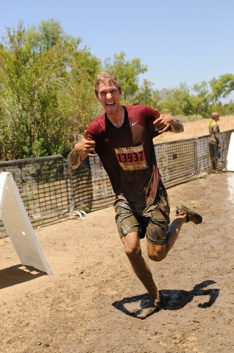

I am a masters student in Electrical Engineering at the University of California, San Diego working on underwater robotics with the Kastner Research Group. My research interests span machine learning, embedded systems, and remote sensing. I completed my undergraduate degree in Electrical Engineering with a focus on Machine Intelligence at UCSD in 2014. During my undergraduate I led the Intelligent Camera Trap Project in the Engineers for Exploration program.
